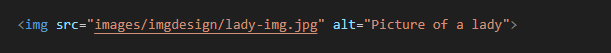
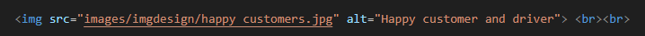
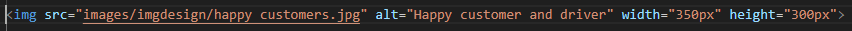

Images in HTML
Images are a powerful tool to enhance the visual appeal of your web page.
They can be used to display objects or people, showcase products and services,
provide information about your business, and much more!
In this lesson, we will learn how to use images effectively within our HTML documents.
To include an image in your HTML document, you need to use the <img> tag.
The syntax for using an image is as follows:
<img src="image_path">
The img tag is an empty tag as it does not require closing.
Image Alts
The alt attribute is also very important to add to your image, so that if for any reason the browser is not able to display the selected image, it will display the text in the alt attribute so the user can know the type of image that was suppose to display.See an example below:
<img src="bigcat.jpg" alt="A picture of a cat">
Importance of the Alt Attribute
Now let's add an image to this html file


It's possible that the image added is too big and as such you want to set a width and height properties for it.
See an example below:

Big Image

You will see that the above image is too big for our webpage. Now let's reduce it.

Reduced Image Output
NOTE: You will learn more about working with images in our CSS class.
Exercise:
Add the following to your Profile page.
- Add a picture of yourself
- A link that will re-direct to Google
- An image with a link that will re-direct you to Wikipedia page